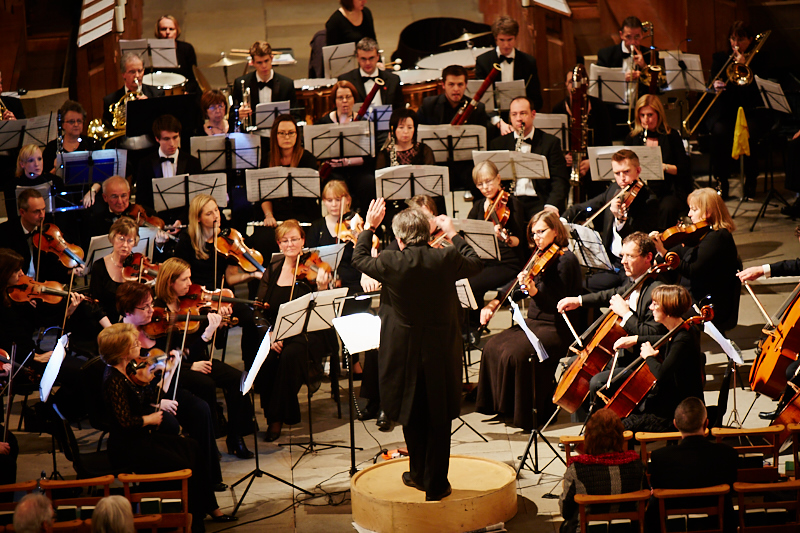

City of Cardiff Symphony Orchestra
 Welcome to CCSO's website.
Welcome to CCSO's website.CCSO is an amateur orchestra based in Cardiff. We perform at least five concerts per year with varied, challenging programmes, often with high-class, professional soloists. 
Our next concert is on Saturday 28th October 2023. The programme is:
| Wagner: | Act 1 of Die Walküre with soloists from WNO |
|---|
For an email reminder for each of our concerts, please contact us.
Please also contact us if you are interested in joining our orchestra.
Our privacy statement is here.
 Follow us on facebook
Follow us on facebook